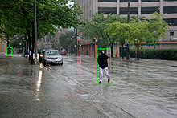
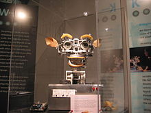

From Wikipedia,The free encyclopedia.
In computer science, artificial intelligence (AI), sometimes called machine intelligence, is intelligence demonstrated by machines, in contrast to the natural intelligence displayed by humans. Colloquially, the term "artificial intelligence" is often used to describe machines (or computers) that mimic "cognitive" functions that humans associate with the human mind, such as "learning" and "problem solving".
As machines become increasingly capable, tasks considered to require "intelligence" are often removed from the definition of AI, a phenomenon known as the AI effect. A quip in Tesler's Theorem says "AI is whatever hasn't been done yet." For instance, optical character recognition is frequently excluded from things considered to be AI, having become a routine technology.Modern machine capabilities generally classified as AI include successfully understanding human speech, competing at the highest level in strategic game systems (such as chess and Go),autonomously operating cars, intelligent routing in content delivery networks, and military simulations.
Artificial intelligence can be classified into three different types of systems: analytical, human-inspired, and humanized artificial intelligence. Analytical AI has only characteristics consistent with cognitive intelligence; generating a cognitive representation of the world and using learning based on past experience to inform future decisions. Human-inspired AI has elements from cognitive and emotional intelligence; understanding human emotions, in addition to cognitive elements, and considering them in their decision making. Humanized AI shows characteristics of all types of competencies (i.e., cognitive, emotional, and social intelligence), is able to be self-conscious and is self-aware in interactions.
The study of mechanical or "formal" reasoning began with philosophers and mathematicians in antiquity. The study of mathematical logic led directly to Alan Turing's theory of computation, which suggested that a machine, by shuffling symbols as simple as "0" and "1", could simulate any conceivable act of mathematical deduction. This insight, that digital computers can simulate any process of formal reasoning, is known as the Church–Turing thesis.Along with concurrent discoveries in neurobiology, information theory and cybernetics, this led researchers to consider the possibility of building an electronic brain. Turing proposed that "if a human could not distinguish between responses from a machine and a human, the machine could be considered "intelligent". The first work that is now generally recognized as AI was McCullouch and Pitts' 1943 formal design for Turing-complete "artificial neurons
Silver didrachma from Crete depicting Talos, an ancient mythical automaton with artificial intelligence
The field of AI research was born at a workshop at Dartmouth College in 1956. Attendees Allen Newell (CMU), Herbert Simon (CMU), John McCarthy (MIT), Marvin Minsky (MIT) and Arthur Samuel (IBM) became the founders and leaders of AI research. They and their students produced programs that the press described as "astonishing": computers were learning checkers strategies (c. 1954)[32] (and by 1959 were reportedly playing better than the average human), solving word problems in algebra, proving logical theorems (Logic Theorist, first run c. 1956) and speaking English.By the middle of the 1960s, research in the U.S. was heavily funded by the Department of Defense and laboratories had been established around the world. AI's founders were optimistic about the future: Herbert Simon predicted, "machines will be capable, within twenty years, of doing any work a man can do". Marvin Minsky agreed, writing, "within a generation ... the problem of creating 'artificial intelligence' will substantially be solved".[
In the early 1980s, AI research was revived by the commercial success of expert systems, a form of AI program that simulated the knowledge and analytical skills of human experts. By 1985, the market for AI had reached over a billion dollars. At the same time, Japan's fifth generation computer project inspired the U.S and British governments to restore funding for academic research. However, beginning with the collapse of the Lisp Machine market in 1987, AI once again fell into disrepute, and a second, longer-lasting hiatus began
A Symbolics Lisp Machine: an early platform for expert systems.
In a 2017 survey, one in five companies reported they had "incorporated AI in some offerings or processes". Around 2016, China greatly accelerated its government funding; given its large supply of data and its rapidly increasing research output, some observers believe it may be on track to becoming an "AI superpower".However, it has been acknowledged that reports regarding artificial intelligence have tended to be exaggerated.
Computer science defines AI research as the study of "intelligent agents": any device that perceives its environment and takes actions that maximize its chance of successfully achieving its goals. A more elaborate definition characterizes AI as “a system’s ability to correctly interpret external data, to learn from such data, and to use those learnings to achieve specific goals and tasks through flexible adaptation.
The overall research goal of artificial intelligence is to create technology that allows computers and machines to function in an intelligent manner. The general problem of simulating (or creating) intelligence has been broken down into sub-problems. These consist of particular traits or capabilities that researchers expect an intelligent system to display. The traits described below have received the most attention.
A self-driving car system may use a neural network to determine which parts of the picture seem to match previous training images of pedestrians, and then model those areas as slow-moving but somewhat unpredictable rectangular prisms that must be avoided.
Early researchers developed algorithms that imitated step-by-step reasoning that humans use when they solve puzzles or make logical deductions. By the late 1980s and 1990s, AI research had developed methods for dealing with uncertain or incomplete information, employing concepts from probability and economics.
These algorithms proved to be insufficient for solving large reasoning problems, because they experienced a "combinatorial explosion": they became exponentially slower as the problems grew larger. In fact, even humans rarely use the step-by-step deduction that early AI research was able to model. They solve most of their problems using fast, intuitive judgements.
Intelligent agents must be able to set goals and achieve them. They need a way to visualize the future—a representation of the state of the world and be able to make predictions about how their actions will change it—and be able to make choices that maximize the utility (or "value") of available choices.
In classical planning problems, the agent can assume that it is the only system acting in the world, allowing the agent to be certain of the consequences of its actions.However, if the agent is not the only actor, then it requires that the agent can reason under uncertainty. This calls for an agent that can not only assess its environment and make predictions, but also evaluate its predictions and adapt based on its assessment.
Machine learning (ML), a fundamental concept of AI research since the field's inception, is the study of computer algorithms that improve automatically through experience.
Unsupervised learning is the ability to find patterns in a stream of input, without requiring a human to label the inputs first. Supervised learning includes both classification and numerical regression, which requires a human to label the input data first. Classification is used to determine what category something belongs in, and occurs after a program sees a number of examples of things from several categories. Regression is the attempt to produce a function that describes the relationship between inputs and outputs and predicts how the outputs should change as the inputs change. Both classifiers and regression learners can be viewed as "function approximators" trying to learn an unknown (possibly implicit) function; for example, a spam classifier can be viewed as learning a function that maps from the text of an email to one of two categories, "spam" or "not spam". Computational learning theory can assess learners by computational complexity, by sample complexity (how much data is required), or by other notions of optimization.[112] In reinforcement learning[113] the agent is rewarded for good responses and punished for bad ones. The agent uses this sequence of rewards and punishments to form a strategy for operating in its problem space.
Machine perception is the ability to use input from sensors (such as cameras (visible spectrum or infrared), microphones, wireless signals, and active lidar, sonar, radar, and tactile sensors) to deduce aspects of the world. Applications include speech recognition,facial recognition, and object recognition.Computer vision is the ability to analyze visual input. Such input is usually ambiguous; a giant, fifty-meter-tall pedestrian far away may produce exactly the same pixels as a nearby normal-sized pedestrian, requiring the AI to judge the relative likelihood and reasonableness of different interpretations, for example by using its "object model" to assess that fifty-meter pedestrians do not exist.
Feature detection (pictured: edge detection) helps AI compose informative abstract structures out of raw data.
AI is heavily used in robotics. Advanced robotic arms and other industrial robots, widely used in modern factories, can learn from experience how to move efficiently despite the presence of friction and gear slippage. A modern mobile robot, when given a small, static, and visible environment, can easily determine its location and map its environment; however, dynamic environments, such as (in endoscopy) the interior of a patient's breathing body, pose a greater challenge. Motion planning is the process of breaking down a movement task into "primitives" such as individual joint movements. Such movement often involves compliant motion, a process where movement requires maintaining physical contact with an object. Moravec's paradox generalizes that low-level sensorimotor skills that humans take for granted are, counterintuitively, difficult to program into a robot; the paradox is named after Hans Moravec, who stated in 1988 that "it is comparatively easy to make computers exhibit adult level performance on intelligence tests or playing checkers, and difficult or impossible to give them the skills of a one-year-old when it comes to perception and mobility". This is attributed to the fact that, unlike checkers, physical dexterity has been a direct target of natural selection for millions of years.
Moravec's paradox can be extended to many forms of social intelligence.Distributed multi-agent coordination of autonomous vehicles remains a difficult problem.Affective computing is an interdisciplinary umbrella that comprises systems which recognize, interpret, process, or simulate human affects. Moderate successes related to affective computing include textual sentiment analysis and, more recently, multimodal affect analysis (see multimodal sentiment analysis), wherein AI classifies the affects displayed by a videotaped subject.
Kismet, a robot with rudimentary social skills.
In the long run, social skills and an understanding of human emotion and game theory would be valuable to a social agent. Being able to predict the actions of others by understanding their motives and emotional states would allow an agent to make better decisions. Some computer systems mimic human emotion and expressions to appear more sensitive to the emotional dynamics of human interaction, or to otherwise facilitate human–computer interaction. Similarly, some virtual assistants are programmed to speak conversationally or even to banter humorously; this tends to give naïve users an unrealistic conception of how intelligent existing computer agents actually are.In the long run, social skills and an understanding of human emotion and game theory would be valuable to a social agent. Being able to predict the actions of others by understanding their motives and emotional states would allow an agent to make better decisions. Some computer systems mimic human emotion and expressions to appear more sensitive to the emotional dynamics of human interaction, or to otherwise facilitate human–computer interaction. Similarly, some virtual assistants are programmed to speak conversationally or even to banter humorously; this tends to give naïve users an unrealistic conception of how intelligent existing computer agents actually are.
Historically, projects such as the Cyc knowledge base (1984–) and the massive Japanese Fifth Generation Computer Systems initiative (1982–1992) attempted to cover the breadth of human cognition. These early projects failed to escape the limitations of non-quantitative symbolic logic models and, in retrospect, greatly underestimated the difficulty of cross-domain AI. Nowadays, the vast majority of current AI researchers work instead on tractable "narrow AI" applications (such as medical diagnosis or automobile navigation).Many researchers predict that such "narrow AI" work in different individual domains will eventually be incorporated into a machine with artificial general intelligence (AGI), combining most of the narrow skills mentioned in this article and at some point even exceeding human ability in most or all these areas. Many advances have general, cross-domain significance. One high-profile example is that DeepMind in the 2010s developed a "generalized artificial intelligence" that could learn many diverse Atari games on its own, and later developed a variant of the system which succeeds at sequential learning. Besides transfer learning,hypothetical AGI breakthroughs could include the development of reflective architectures that can engage in decision-theoretic metareasoning, and figuring out how to "slurp up" a comprehensive knowledge base from the entire unstructured Web. Some argue that some kind of (currently-undiscovered) conceptually straightforward, but mathematically difficult, "Master Algorithm" could lead to AGI.Finally, a few "emergent" approaches look to simulating human intelligence extremely closely, and believe that anthropomorphic features like an artificial brain or simulated child development may someday reach a critical point where general intelligence emerges.
Many of the problems in this article may also require general intelligence, if machines are to solve the problems as well as people do. For example, even specific straightforward tasks, like machine translation, require that a machine read and write in both languages (NLP), follow the author's argument (reason), know what is being talked about (knowledge), and faithfully reproduce the author's original intent (social intelligence). A problem like machine translation is considered "AI-complete", because all of these problems need to be solved simultaneously in order to reach human-level machine performance.